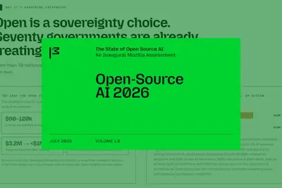
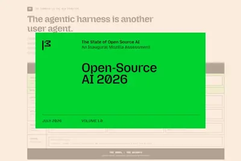
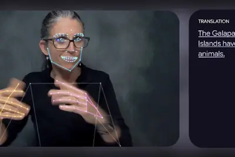
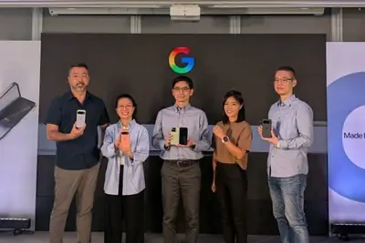
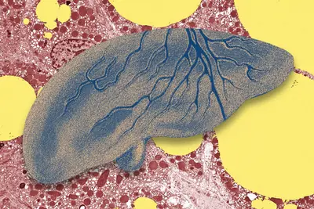
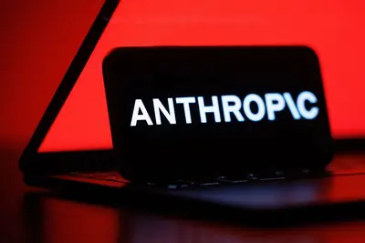
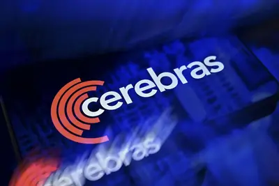
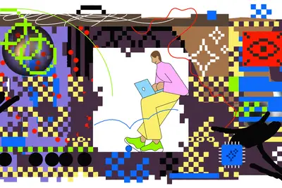

模型與研究
模型與研究
AI 每日新聞彙整
模型與研究
 政策與法規
政策與法規

開源社群全部主題
模型與研究
重點4 家媒體報導4.6grokxai
xAI推出Grok 4.6，強化AI代理長時間任務能力
xAI發表旗艦模型Grok 4.6，在Artificial Analysis的智慧指數中獲得61分，追平OpenAI GPT-5.6 Sol Max，僅次於Anthropic Claude Opus 5與Fable 5。新版本主打長時間運作的AI代理，能自主研究、規劃與執行多步驟任務，並透過Cursor、Grok Build及API等平台供應。
- 數位時代 SpaceXAI發表Grok 4.6！智慧指數61分追平GPT-5.6 Sol，Cursor與Grok Build首週用量加倍
- TechOrange 科技報橘 Grok 4.6 強攻長時間 AI Agent：企業選模型不能再只看 Token 單價
- iThome xAI推出Grok 4.6，主打AI代理人長時間工作
- Hacker News (100+) Grok 4.6
重點internapaloozaopenai
奧特曼：6 個月內 AI 將能完美理解用戶使用情境
OpenAI 執行長奧特曼在 Internapalooza 活動中表示，未來 6 個月內後續 AI 模型將具備「完美理解用戶使用情境」能力，能監看螢幕、記錄會議與通話，全面了解用戶生活。他認為這將讓 AI 更貼近個人需求，但未透露具體技術細節。
opensourcestateharness
AI競爭轉向代理執行框架，跨框架權限控管缺標準
Mozilla報告指出，AI產業競爭從模型轉向代理執行框架，因模型能力差距縮小且成本下降，框架決定AI可取得的資訊與操作，但跨框架權限控管仍缺共通標準。

產品與應用
重點2 家媒體報導profold60990
Google發表Pixel 11系列與摺疊機，Tensor G6強化AI效能
Google推出Pixel 11、Pixel 11 Pro、Pixel 11 Pro XL及摺疊機Pixel 11 Pro Fold，搭載Tensor G6自研晶片，TPU效能提升50%，支援Gemini Nano模型，強化裝置端AI功能。Pixel 11系列售價29,990元起，摺疊機60,990元起，8月20日上市。
重點gboardlivetranscribe
Google推手語轉文字AI模型SL2T，整合Pixel 11
Google DeepMind推出SL2T模型，可透過手機鏡頭即時將手語翻譯成文字，初期支援美國手語轉英文，並整合於Pixel 11的Gboard與即時轉錄App。

- iThome Google推出手語轉文字AI模型，讓手機看懂手語
重點robotphonehonor
榮耀發表全球首款機器人手機Robot Phone
榮耀推出號稱全球首款機器人手機Robot Phone，整合AI Agent與可動機械雲台，售價人民幣9,999元起，開啟手機新變局。

- DIGITIMES 榮耀發表全球首款機器人手機Robot Phone 可動雲台揭新變局
重點chip
Google Pixel 11 系列三款規格售價公開，入門款也有 30 倍變焦
Google Pixel 11 系列發表，共三款機型，全系列搭載 Tensor G6 晶片，主打 AI 功能與相機升級，入門款即具 30 倍變焦，售價最低不到三萬元，8 月 20 日上市。
重點gemini
Pixel 11 將 Gemini 推向手機核心，Google 台灣團隊談軟硬體整合
Google Pixel 11 系列發表，強調 Gemini 深入手機使用體驗，能在背景完成任務。Google 裝置與服務資深副總裁表示，AI 可能大幅改變人們使用手機的方式，Gemini 未來可能成為主要互動介面。台灣硬體研發團隊也分享軟硬體整合的工程細節。

- TechOrange 科技報橘 Pixel 11 把 Gemini 推向手機核心：Google 台灣硬體研發團隊談背後的軟硬體工程
重點agenta16z2000
AI Agent 操作電腦準確率達 85%，企業仍憂可靠性不足
電腦操作 AI Agent 已從展示階段進入企業正式部署，用於更新系統、搬移資料等重複性工作。OSWorld-Verified 數據顯示，頂尖模型任務完成率一年內從 42% 升至 85%，超越人類平均的 72%，但創投 a16z 提醒，每 100 個任務仍有 15 個失敗，企業流程要求高準確度，可靠性仍是關鍵挑戰。
- TechOrange 科技報橘 AI Agent 操作電腦準確率衝上 85%，為何企業真正難題仍是如何「可靠地把工作做完」？
2 家媒體報導applewatchtag
Google發表Pixel Tag追蹤器，以藍牙技術挑戰AirTag
Google在Made by Google活動中推出售價29美元的Pixel Tag，採用新興藍牙技術，與Apple AirTag和Samsung的追蹤器競爭。活動同時發表Pixel 11系列手機與Pixel Watch 5，並整合多項Gemini AI功能。
robotcompute
羅昇搶進人形機器人供應鏈，運算平台打入歐美
佳世達旗下羅昇企業將工業電腦、運動控制與自動化整合能力延伸至人形機器人，提供AI推論、多感測器處理與多軸控制的運算平台，已通過海外客戶驗證並導入國際應用。

- DIGITIMES 羅昇搶進人形機器人供應鏈 運算控制平台打進歐美市場
helpfattyliver
AI 協助早期偵測脂肪肝，應對全球十億患者
全球超過十億人患有脂肪肝，可能引發多種健康問題。研究人員認為 AI 工具能早期發現病況並協助治療，有助於挽救生命。

2.0xiaomippt
小米超級小愛 2.0 專家模式上線，推出積分會員訂閱方案
小米推出超級小愛 2.0「專家模式」，基於 Xiaomi MiMo 模型與 OS AI 化架構，具備任務編排、內容生成與跨設備生態覆蓋能力。該模式已接入系統應用，並推出積分會員訂閱方案，每月免費送 1000 積分。
everypreorderpixel
Pixel 11系列預購開跑，電信商與通路祭出優惠
Google Pixel 11系列發表後，Amazon、T-Mobile等通路推出預購優惠，包括最高350美元禮品卡、舊機換新機免費等方案。ZDNet整理各家預購管道與最佳優惠，供消費者參考。
- ZDNet AI Every Amazon Google Pixel 11 preorder deal - get up to $350 on an Amazon gift card, free
- ZDNet AI Every Pixel 11 deal at T-Mobile right now: Trade-in offers, free phones with new line, and more
- ZDNet AI How to preorder every new Google Pixel device - and the best deals I found
- ZDNet AI Every Pixel device announced at Made by Google 2026: 11 Pro Fold, Pixel Watch 5, and more
sandbarwearablescapture
Sandbar推出語音AI戒指，搶攻AI穿戴裝置市場
AI記事硬體市場持續成長，新創Sandbar推出語音戒指Stream，主打捕捉用戶的隨身想法與會議內容，並轉化為摘要與待辦事項。Sandbar認為語音是AI穿戴裝置的未來，試圖在競爭激烈的市場中突圍。

givetrade-infree
AT&T與Verizon推出Pixel 11 Pro優惠方案
Google Pixel 11系列發表後，AT&T提供舊機換新機免費升級Pixel 11 Pro的方案，Verizon則推出特定方案免舊機換新機的優惠。兩大電信商積極搶攻預購市場。
antivirussoftwareprotect
2026 年最佳防毒軟體推薦，保護電腦與行動裝置
ZDNet 評選 2026 年最佳防毒軟體，強調能有效防護 PC、筆電與行動裝置免受惡意軟體威脅，且不需昂貴費用。
passwordmanagerstested
2026 年最佳密碼管理器推薦，經專家實測
ZDNet 評選 2026 年最佳密碼管理器，經專家實測，協助使用者安全管理多個線上帳號密碼，提升帳戶安全性。
企業與資金
重點2 家媒體報導geminisergeybrin
Google創辦人布林親自督軍，要求DeepMind強化Gemini編碼能力
據路透社報導，Google共同創辦人Sergey Brin近期頻繁要求DeepMind團隊集中資源，提升Gemini模型的程式撰寫能力，以追趕競爭對手。此舉顯示Google在AI競賽中急起直追的決心。
- DIGITIMES Google創辦人親自敦促加快腳步 集中衝刺Gemini編碼能力
- 科技新報 TechNews Google 創辦人布林親自督軍，重整 AI 團隊搶救 Gemini 力拚逆襲強敵
重點ipodecartanthropic
Anthropic傳擬以60億美元收購AI新創Decart
據傳Anthropic正洽談以約60億美元收購AI新創Decart AI，若成真將是其在IPO前已知最大規模收購。交易尚未敲定，仍有破局可能。

重點spacexgrok
馬斯克確認 SpaceX 將用員工數據訓練 Grok AI
馬斯克在 SpaceX 全員會議中表示，將使用公司內部數據（包括員工貢獻的資料）訓練 Grok AI，並稱員工將成為 AI 的「父母」，讓模型繼承其思想與價值觀。此舉凸顯科技公司對真實世界操作數據的需求，以及馬斯克對超級智能 AI 風險的長期擔憂。
重點fundingvaluationraises
AI新創融資熱潮持續，Cognition傳將以400億美元估值募資
AI程式開發新創Cognition據傳正洽談新一輪融資，估值可能達400億美元，距離上一輪260億美元僅數月。同時，OpenAI支持的Thrive Holdings以120億美元估值募得20億美元，Lovable則以133億美元估值再募4億美元，顯示AI企業資金動能強勁。

cerebraschip2026
Cerebras上修全年展望但硬體業務走弱
AI晶片新創Cerebras Systems上修2026全年營收與毛利率展望，但硬體銷售衰退，市場反應轉向保守。

- DIGITIMES Cerebras上修2026全年展望 惟硬體業務走弱引關注
h26chipasic
擷發科技公布上半年財報並通過現金增資案
專注AI軟體設計服務與特用晶片設計的擷發科技，公布2026年上半年財務報告，並宣布董事會通過現金增資案，以深化研發。此舉顯示公司正積極為商業化收割期做準備。
- DIGITIMES 擷發2H26迎商業化收割期 董事會通過現增案深化研發
q26poscompute
飛捷Q2獲利創新高，靠備料與支付POS支撐
工業電腦業者飛捷科技受惠AI軟體與場域算力升級需求，加上營運槓桿效益，2026年第二季獲利創新高，美洲市場貢獻最高。

- DIGITIMES 缺料漲價擋不住 飛捷2Q26毛利率靠備料與支付POS支撐
晶片與基礎設施
重點2 家媒體報導datacenterqfy26coherent
AI基建需求帶動光通訊與GPU雲端服務營收成長
光通訊大廠Coherent公布4QFY26財報，受惠AI基礎設施投資，營收達20.5億美元，優於預期。同時，GPU雲端服務商CoreWeave表示運算容量接近售罄，營收積壓達1,042億美元，並上調資本支出至350至390億美元，反映AI算力需求強勁。
- DIGITIMES AI基建點燃光通訊需求 Coherent 4QFY26資料中心業務營收激增
- TechOrange 科技報橘 【科技早餐】CoreWeave 算力幾乎售罄，IBM 簽 2.4 億美元 NVIDIA 推論協議
重點sk-hynixnvidiafunding
SK海力士美國封裝廠動工，崔泰源與黃仁勳出席受關注
SK海力士將於8月27日在美國印第安納州舉行先進封裝廠動工典禮，外界關注SK集團會長崔泰源與NVIDIA執行長黃仁勳是否同場，以及崔泰源是否宣布加碼投資。

- DIGITIMES SK海力士美國先進封裝廠動工典禮 崔泰源、黃仁勳出席與否成焦點
重點alibabatencentdeepseek
寒武紀完成五大國產大模型適配，第六代晶片架構研發中
寒武紀在 2026 年半年度業績說明會宣布，已完成 GLM、DeepSeek、Qwen、Kimi、MiniMax 五款國產主流大模型的推理適配，並持續推進訓練側優化。第六代智能處理器微架構與指令集仍在研發，將重點針對大模型訓練與推論。
hbmdatacenterhpc
至上電子整合記憶體、散熱、供電與監控，打造完整 AI 基礎架構方案
代理式 AI、高效運算與大型語言模型發展帶動企業建置 AI 資料中心，至上電子提供整合記憶體、散熱、供電與監控的完整基礎架構方案，滿足企業需求。
- 科技新報 TechNews 至上電子整合記憶體、散熱、供電與監控，打造完整 AI 基礎架構方案
150edgecompmt-n150
映泰推出 EdgeComp MT-N150 工業電腦，支援獨立 NPU
映泰發布基於英特爾 N150 處理器的工業電腦 EdgeComp MT-N150，支援 DEEPX 與 MemryX 獨立 NPU，專為智慧安防與智慧城市邊緣運算設計。設備具備寬幅電源、多種擴充槽與三路顯示輸出，工作溫度範圍 0~50°C，適合嚴苛環境部署。
政策與法規
重點3 家媒體報導amazontwitchopt
Twitch預設將內容用於訓練Amazon生成式AI，使用者可選擇退出
Twitch宣布使用者產製內容（包括直播、VOD、剪輯、聊天訊息等）預設可能用於訓練Amazon的生成式AI模型，但提供退出選項。Twitch產品長坦言，若改為主動同意制，幾乎不會有人願意加入。此舉引發使用者對隱私與資料使用的關注。
重點nvidiacomputechip
美國加強查緝中國租用海外算力，堵截 AI 晶片禁令漏洞
美國白宮對中國禁運輝達先進晶片，但當前出現因地理位置而生的漏洞，中國可透過租用海外算力取得 AI 運算資源。美國正加強查緝此管道，以防堵禁令被規避。
- 科技新報 TechNews 美國加緊查緝中國取得 AI 算利管道，當前重點防堵租用海外算力
重點
英國研擬防範措施，避免恐怖分子利用 AI 製造生物武器
英國政府準備監管 AI 在基因合成領域的應用，研究多種防範措施，包括制定新生物武器法律、建立基因合成篩查制度，並要求實驗室通報可疑客戶。由於威脅具全球性，英國也考慮與國際合作。
美國選定巴拿馬為AI供應鏈貨運效率合作首站
為提升AI供應鏈貨運效率，美國國務院承諾提供外援資金，強化與巴拿馬等夥伴國的合作。
- DIGITIMES 提高AI供應鏈貨運效率 美國選定巴拿馬為合作首站
安全與倫理
重點2 家媒體報導safetydream
中國駭客以AI代理攻擊台灣政府與關鍵基礎設施
以色列資安公司Dream Security揭露，疑似中國駭客利用開源AI代理框架（如OpenClaw）組成「自主網攻軍團」，在7月1日至4日對台灣政府機關及能源基礎設施發動攻擊。數位發展部證實偵測到異常攻擊，並啟動調查，顯示AI代理能動態切換攻擊鏈，對資安防線構成新威脅。
重點
辛頓、李飛飛、吳恩達齊聲呼籲：AI 應保持一定程度的開放
三位 AI 領域重量級人物在 Ai4 大會上分別闡述對 AI 開放的立場，擔憂技術發展由少數大型公司掌控，可能導致創新下降、平台壟斷。他們認為 AI 需要保持一定程度的開放，以維持競爭與創新。

開源社群
重點
開放權重AI成各國強化科技自主新選項
Mozilla報告顯示，頂尖開放權重模型與封閉模型能力差距縮小至約3%，大中華與東亞採用率達89%，各國開始將開放權重模型視為降低外部依賴、強化科技自主的選項。
- iThome 開放權重AI成各國強化科技自主新選項
codexcodeclaude
開發工具整合本機AI模型，提升程式開發效率
Unsloth推出Desktop Beta，讓使用者在本地執行與訓練AI模型，並可串接Claude Code、OpenAI Codex等開發工具。Spotify發布AI開發環境Xirp，提供企業系統脈絡給AI代理。微軟Intelligent Terminal 0.2則支援本機模型與多代理分頁，顯示AI開發工具走向本地化與整合趨勢。

其他
skillsop
解析AI Agent的Skill：寫給AI的SOP說明書
本文解釋AI Agent中Skill的概念，將其比喻為寫給AI的SOP說明書，教導AI在特定場景依序執行任務，並釐清Skill與提示詞的差異及應用。
kidsfeelwords
孩子們如何看待 AI？MIT 科技評論訪談揭露真實心聲
MIT Technology Review 訪問兒童對 AI 的看法，發現他們的使用方式與預期不同，有人用於作弊，也有人分享啟發性應用，呈現多元觀點。

- MIT Technology Review AI How kids feel about AI, in their own words